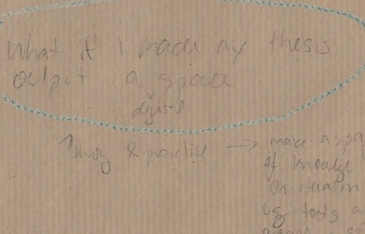
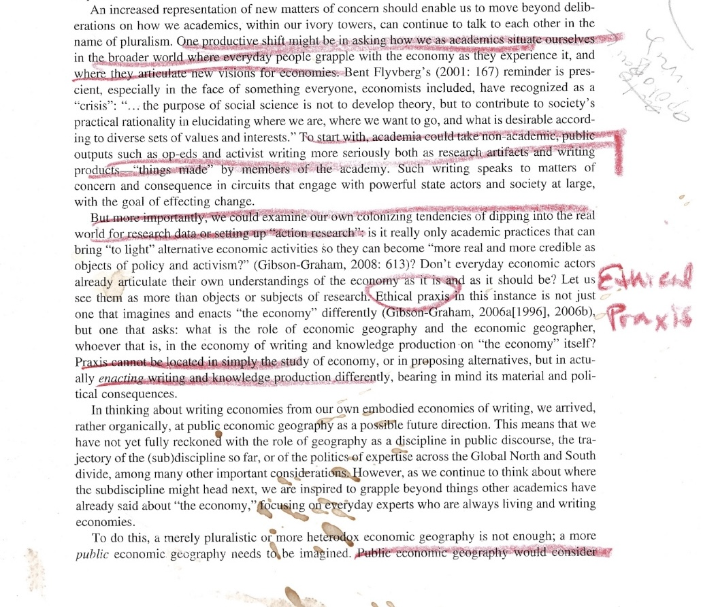

Roberts, Les. Spatial Anthropology: Excursions in Liminal Space. Rowman and Littlefield, 2018.
How, then, might the effect of interferences be marked while accounting for the apparatus of their production? In other words, how might knowledge generated through everyday spatial practices be rendered without being flattened, georeferenced, or vectorized? This page is an account of the form and formation of negative-spaces––the website which marks the effects of my deep mapping practice and constitutes the contents of what I will submit as my master’s thesis in geography. In what follows, I articulate how making space for deep mapping renders theory as praxis. In doing so, I attend to the exclusions entailed in defining my research output and rendering it intelligible to the sociotechnical system of institutional graduate publishing whose archival will performatively render my research-creation legible as an MA thesis.
INSTITUTIONAL FORMALITIES
I will submit as my master of arts (MA) thesis in geography a file entitled ubc_2024_may_crandalloral_lilydemet_negative-spaces.zip. What’s in a filename turns out to matter quite a bit, so the following section will break down this concatenation and how my submission interferes with formal convention. cIRcle (circle.ubc.ca) is the institutional repository for The University of British Columbia (UBC) where I am pursuing a Master of Arts (MA) degree in geography. The mandate of cIRcle is to preserve archived material in perpetuity, a commitment reiterated by the default date range to search the repository’s open collection being 1982 BCE to 2023 (“Search - UBC Library Open Collections” n.d.). UBC began accepting electronic theses and dissertations (ETDs) through a pilot project in 2007 and now requires all theses and dissertations be submitted electronically to cIRcle. From the perspective those spearheading the endeavor, this marks a shift from the Dark Ages of thesis submission and archiving to The Age of Light (Read and Sprout 2009). The collaboration between UBC Library and the Faculty of Graduate and Postdoctoral Studies responsible for the initiative persists today, though continues to form a complex sociotechnical system in which “acceptance” and “approval” of submissions is a distributed decision. This is especially true, I learned, when it comes to proposed formats for which there is no technical precedent.
There has never been a thesis in the form of a website at UBC.
Because deep mapping is a practice of interference, not opposition, I initiated a conversation with the Associate Director of Student Academic Services and the Public Scholarship Coordinator within the Faculty of Graduate in Postdoctoral Studies to find a way for my thesis output to be archived by cIRcle well before my intended time of submission. As it stood the afternoon of July 13th, 2023 at the time of the meeting, in order for theses and dissertations to be accepted by cIRcle’s submission platform they were required to be uploaded in the format ubc_gradyear_gradmonth_lastname_firstname.pdf (“Library:Circle/Uploading Electronic Theses and Dissertations - UBC Wiki” 1-18-2023). Upload of auxiliary multimedia was and continues to be an option, as “cIRcle can technically accept all file formats” (“Library:Circle/File Format Guidelines - UBC Wiki” 2023). Searching cIRcle’s collection of MA and MSc (Master of Science) theses (“Search - UBC Library Open Collections” n.d.), I found a handful of theses with supplementary files. In addition to the text thesis in .pdf form, archived MA thesis included still images (as .gif files), moving image/audiovisual (as .m4v and .mp4 files), datasets (as .csv, .sav, .txt, and .zip files), and sound/audio (as .zip, .wav, and .mp3 files). Supplementary datasets, models, and software were more prevalent amongst MSc submissions, archived as .zip, .mp4, and, .xlsx files. However, all multimedia were submitted as secondary to a ubc_gradyear_gradmonth_lastname_firstname.pdf formatted upload. In conversation with the Associate Director of Student Academic Services and the Public Scholarship Coordinator on July 13th, 2023, I indicated hesitance over submitting any .pdf file since my entire thesis is rendered by my website, to which their response was that they were not convinced and, more importantly, I would have build an argument to "convince" The Faculty of Graduate and Postdoctoral Studies as to why inclusion of a few page .pdf would "damage" my thesis. They held that the first few pages of the monograph thesis contain vital metadata. This despite my proposed website containing these requirements (title page, committee page, abstracts), and my reiteration that an abstract and metadata––including title, creator, supervisor, publisher, date issued, description, degree, program, affiliation, graduation date, and degree grantor––are all manually entered to cIRcle upon a submission upload, and displayed for each archived thesis alongside the downloadable thesis file(s). To this, they cited convention––theses at UBC have ‘always’ been submitted with a linear text component.
The bottom line, I gathered, was that while multimedia files can technically be accepted by cIRcle’s infrastructure and there is no formal rule that ETDs must be submitted with a .pdf, the linear text .pdf is what makes a submission legible, or “acceptable,” to The Faculty of Graduate and Postdoctoral Studies as a thesis. That is, until four hours after our conversation. Four hours after I spoke with representatives of The Faculty of Graduate and Postdoctoral Studies on July 13th, 2023, the UBC Library webpage for uploading ETDs to cIRcle, which hadn’t been updated in six months, was refigured to include upload instructions and requirements to account for multi-file theses. The new mandate requires a .pdf file be the primary document uploaded (see site 1). All other multimedia uploads, including .zip files, are now determined to be secondary to the .pdf (“Library:Circle/Uploading Electronic Theses and Dissertations: Difference between Revisions - UBC Wiki” 7-13-2023). Below is an excerpt from the full history log of that day.
Site 1. Screenshot of the revisions to “Library:Circle/Uploading Electronic Theses and Dissertations made as of 18:20, 13 July 2023. A few of the additions, which can be viewed publicly by navigating to the history of the UBC Wiki page, are as follows: Your first file must contain your title page and preliminary pages, so this will always be a pdf file: ubc_gradyear_gradmonth_lastname_firstname_file1.pdf. When uploading multi-file theses, the PDF file containing your title page and preliminary pages must be the first-listed file in your submission. Subsequent file should then be submitted in order of importance as determined by your Committee. Read the full history log here.
So I am left with the decision of what to do. In a voice recording taken while driving the Coquihalla Highway back to Vancouver days before the meeting I said: “It's less about the specific output form of my website and more about the process of interfering with the cIRcle system from within by proposing this.” This is not to say my chosen form doesn’t matter, but rather, in a Baradian (2007) vein, how it comes to matter is the result of boundary making practices through which the boundary of what the hegemonic system determines to be an intelligible (read “acceptable”) form becomes articulate.
Full audio recording taken on ride back before meeting, July 2023
Like I mentioned in disorientation.html, I did not begin my master's with a distinct goal or idea of the shape my output would take. In the spring of 2022, I first began envisioning possibilities. Not until that fall did I decide to make a digital space, inspired by a simple iteration I'd created to render the final project of my counter cartographies course.
May 2022

September 2022
Even the following spring, when I first reached out to the Public Scholarship Coordinator, I didn't know how I would archive my emerging website. My aim in initiating a dialogue with the Faculty of Graduate and Postdoctoral Studies was to get a sense of how the institution conceived of legibility, and where the limit lay. The form in which I submit my thesis as website comes to matter as the effect of that conversation.
NEGATIVE SPACES
I will submit as my master’s thesis in geography the file ubc_2024_may_crandalloral_lilydemet_negative-spaces.zip, along with a brief PDF with metadata, the last page of which details how to download and unzip the compressed file in order to enter negative-spaces.
Why locate my work in negative-spaces? The idea was inspired by a sticker on a lamppost I noticed while thinking with an intersection downtown (see site 2). It read: AVOID THE SUBJECT.
Site 1. Screenshot of the revisions to
Site 2. Sticker on lamppost somewhere downtown Vancouver reading AVOID THE SUBJECT.
In visual art, negative space refers to that which surrounds the subject but is not the intended focus of attention. I know this concept from years of practical experience as a painter. Negative space gives definition to the intelligible form by being that which the intelligible form is not––the unintelligible. The boundary, or difference between intelligible and unintelligible is articulated in the instant that which the intelligible form excludes shows up in the space of the intelligible. Negative space and intelligibility are in relation not of opposition but of complementary constitution––an entanglement I believe to be analogous to (if not the same as) Foucault’s (1977) rendering of limit and transgression. Writes Foucault, “transgression carries the limit right to the limit of its being; transgression forces the limit to face the fact of its imminent disappearance, to find itself in what it excludes…” (Foucault 1977, 34). Interference at once articulates difference and redraws boundaries by bringing what was previously unintelligible into focus.
Just under Cambie Bridge there's a large fenced off lot with construction materials. Passing this area on a walk around False Creek, we notice a portion of the fencing has been wrenched apart. We slip inside to find derelict garden beds where last year's plantings are going to seed. Following a slim path further, we encounter an overgrown gravel dump strewn with large slabs of broken cement. The garbage of previous inhabitants has piled up and we step carefully, avoiding the serrated edges of building blocks, rusty wires, and sharps. Where are we? What secluded place have we stumbled upon, lured by the invitation of an unexpected opening? Emerging from the dump, we see that we are inside the lot, though a ways away from the wooden pallets and parked construction vehicles. We continue forward down unpaved road, aware, now, of how exposed we are in a place we are likely not supposed to be. Ahead is a warehouse, dark and empty. Its sides are composed of a collage of corrugated panels, as if the goal were to keep people from seeing in rather than protecting anything inside from the weather. As we near, a parking lot comes into view. One of those ones unkept expanses of asphalt with the pay-to-park kiosk in the corner. A handful of cars are clustered around the kiosk, close to the entrance. No barrier separates the road from the parking lot from us. Had we wandered in from this side, we might not have been drawn to explore further. And if we had, felt little sense of unease. From the side of the parking lot closest to the adjacent park, a foot path runs back through the overgrowth directly to the garden beds. When did we enter the intelligibility of the parking lot? Why put a fence on one side of the gravel dump but not the other?
Intelligibility is not a static state but the result of boundary drawing practices; what constitutes negative space is therefore provisional, continuously figured and refigured in relation to the intelligible form. Locating my thesis in negative-spaces brings to the fore forms of knowledge production and rendering spatial research public that are institutionally rendered outside the norm. And, in doing so, enacts an interference which redraws the definition of possibility. It’s not one against another (opposition) but a Baradian 'intra-action' which reveals the limit through the transgressive act of proposing alternative framings. This is the work of reconfiguring boundaries. I turn now to the configuration of my thesis and its configured form.
FORMAL RE/CONFIGURATIONS
The filetype of my thesis is .zip, meaning my submission is a compressed folder. In the case of my thesis, the compressed (zipped) folder contains files of heterogenous types (.html, .css, .md, .txt., .png, .jpeg, .jpg, .mp3, .mp4, .ttf, .zip, .pdf) sorted into additional folders. The .zip format therefore assembles a multitude of files into one element. Once archived by cIRcle, to explore my MA thesis a visitor will need a computer, internet connection, and web browser––all agencies required to access circle.ubc.ca in the first place. From circle.ubc.ca, the repository’s public-facing graphical user interface (GUI), a visitor would then navigate to theses and dissertations where they would find my thesis using relevant search terms. They would then download ubc_2024_may_crandalloral_lilydemet_negative-spaces.zip. Once downloaded, the .zip file is located “locally” on their personal computer, likely in user/downloads. This as opposed to it being stored “remotely” on cIRcle servers.
The .zip folder is a “release”––a version in time or instantaneous configuration of the assorted files constitutive of the website negative-spaces.github.io, hosted by Github. Github is a platform conventionally used for managing code development for software projects. It is a popular site for team work because collaborators can work asynchronously on a project by “cloning” it to their local device and then “pushing” their changes "upstream" to the remote project hosted by Github. What’s key is that Github integrates git, a version control software which allows users to track changes made to files and handle complex merges in the case of multiple collaborators pushing changes to the same document. I was initially inspired to appropriate the conventional use of Github by sultanazana.github.io, whose “network of webpages will grow more tangled with time” (Zana n.d.). I also chose Github as the host platform for the development of my thesis website because it provided a means to render visible the iterative process of my site's formation. While the website located at negative-spaces.github.io will remain as long as Github exists, I made the decision to submit as my thesis a release of the site so that what is rendered as my thesis is materially archived within cIRcle. This means the "commit history"––an archive of each document as it was changed and a diffraction pattern marking the site’s iterative formation––is not included as part of my thesis as it is rendered institutionally intelligible. However, this element of process can still be accessed at github.com/negative-spaces/negative-spaces.github.io/commits/main/ for those curious.
Once downloaded, the contents of a zipped folder are not immediately accessible. As you may know from practical experience, in order to access the contents of a .zip file you must first unzip or otherwise extract the compressed folder. A now-common way to do this is to right-click the .zip file and choose an extraction software with which to unzip the file. If the computer is set up to automatically recognize a .zip file and extract its contents upon double-clicking, that is an option too. The extracted folder is named negative-spaces. The folder negative-spaces contains the .html documents which, once read by web browsers, comprise what’s read by browsers of my web site. It also contains the Cascading Style Sheet (.css file) responsible for the rendered look and feel of my website. Images, video, and audio files are organized into subfolders of negative-spaces, linked by specific file paths that embed them as relevant throughout the html pages.
From the access instructions archived as a .pdf alongside ubc_2024_may_crandalloral_lilydemet_negative-spaces.zip: negative-spaces is a partial account of an ongoing and open-ended conversation, one which invites the visitor to engage as interlocutor. How, then, might one enter into dialogue? Within the folder negative-spaces, right click any of the .html files and “open with” your default web browser. (Note: all these instructions will be detailed in the embedded metadata beside my thesis in cIRcle, as well as included in a README.txt file within the unzipped folder). In this way, my thesis is 'intra-actively' (Barad 2007) rendered. While negative-spaces is an instantaneous configuration of files, each in a necessarily distinct location, navigation spatializes it, producing a webbed site itself a space for deep mapping, for nonlinear exploration following ideas that grasp and pull the visitor. For evaluating supervisors and those desiring a guided tour, I have ordered the menu by my recommended navigation.
Upon 'intra-active' (Barad 2007) production of the digital space, the visitor will find multimedia, rather than relegated to secondary material or the appendix of a .pdf, integrated directly with text on the page. As Cliffard McLucas (2000) said, what’s rendered of deep mapping “will be genuinely multimedia, not as an aesthetic gesture or affectation, but as a practical necessity.” Rendering in the digital form allows me to build for a variety of creative syncretisms such as parataxis (placing elements side by side), montage (juxtaposition of disparate elements), and commonplacing (an arrangement of resonant quotes) (Cresswell 2019). Take for example my page on practice, negative-spaces/practice.html, which traces my theorization of deep mapping by setting up a dialogue between the physical and conceptual fields of my encounter. I format this conversation as digital commonplace: embedded on the left are passages from the conceptual field; on the right, interpretations of deep mapping generated through navigating Vancouver. The form of practice.html is therefore akin to my practice of deep mapping. The interlocutor is invited to think through practice in order to arrive at a situated theory, and, do so in the form of a dialogue. Form thus becomes a site of praxis.
SITATION: CITING SITUATED PRACTICES as MULTIMODAL KNOWLEDGES
Citation is a form of address, a formal acknowledgement of an other within the written conversation of an academic text. Mott and Cockayne (2017) call for conscientious engagement in citation as a performative practice for resisting “hegemonies of knowledge production and authority” within the neoliberal university that reify white, cisgendered, heteromasculinist narratives (959). They do not mention ableism. Their audience is also other professors (citing narrowly, they write, does a disservice to “our students”). What does conscientious engagement mean for graduate students, especially master’s students like myself who come to human geography from physical geography or who are entirely new to a discipline? When choosing what to read (this already presupposes a clear understanding of what a project is about), how does one account for time constraints, for expectations on bibliography length and breadth over depth? Conscientious engagement might also include mention of how one happened upon a text (Was it required reading? An interlocutor’s recommendation? A serendipitous find?), and whether it was read deeply or perfunctorily. Additionally, Mott and Cockayne (2017) focus on the content of bibliographies rather than the form of citation. Challenging content-oriented interdisciplinarity, Natalie Loveless (2019) suggests a ‘polydisciplinamorous’ ethic that attends to how one relates to the various fields drawn upon and the ways in which one's research forms kinship ties. Conscientious engagement should not only be about whom we cite but how. I suggest the form of in-text citation to be a site as well as tactic for interfering “hegemonies of knowledge production and authority” (Mott and Cockayne 2017, 959)
Throughout the pages of negative-spaces, instead of transcribing block quotes from books and printed articles, I’ve scanned my marked-up readings and embedded them in the page so as to trace my process of thinking-together with the fields of my encounter. I call this form of citation sitation. Sitation cites a reading practice that is situated and embodied. Flipping back and forth through pages, annotating, highlighting, creasing corners––all help me process information. Iterative readings transform pages into palimpsests, sites of interference marked by the intra-active dialogue of encounter. Thoughts scribbled avidly around margins, different colored crayon marks from each re/reading, wrinkles folds and even torn pages, coffee stains and watermarks from rain––all these remind me of the material context in which I engaged a piece, thus aiding in my recall of ideas and connections. Embedding quotes in the form of images is conscientious engagement with the form of citation. It performatively valorizes process as a site of knowledge production, refusing to conform to normative formats that determine what is included (and excluded) within what’s rendered of academic research. By framing marginalia, reading between the lines, and ideas located in negative spaces as sites of knowledge production, sitation cites a praxis of slow scholarship that counts what matters differently (Mountz et al. 2015). Sitation acknowledges a “temporal and material attunement within the academy that require[s] slowing down in a way that does not fetishize the slow but in which slowness comes from the work of defamiliarization and the time it takes to ask questions differently” (Loveless 2019, 107, emphasis in original). I have taken 3 years to complete my master's degree because I approached my project from a state of disorientation, asking open-ended questions like "what could it mean to think with place? to feel the city?" I did not begin with the means to answer these questions, or even realize they were my research questions until, having cultivated a deep mapping practice, I found myself asking them out of curiosity.
I also want to acknowledge, and this is important, that sometimes slowness/slowing down is not a choice. This may be for various reasons such as existing or acquired disability, long covid, chronic illness, familial commitments, external responsibilities, or financial pressures. The following is an excerpt written for the departmental introductory seminar all incoming human geography graduates are required to take together.
December 2021 //cw suicide
Early in the term Professor K made a joke in which she recalled a professor whose class was so hard, its difficulty was measured by the number of students who committed suicide. I was silent in the laughter that followed. Discussion resumed. I express now what I couldn’t find the words to say then: people die by suicide because they believe there is no possible way to go on. The hopelessness of students in the face of unrelenting academic pressure is not at all funny. Professor K’s humor revealed the prevalent conceptualization of “rigor” as difficulty to the point of impossibility. . .Write the Great Lakes Feminist Geography Collective:
The business enterprise of academic life in the neoliberal university produces a work rhythm that is rushed, riddled with anxiety and pressure to be ever-present. Sometimes life gets in the way. Overwhelming pressures can lead to paralysis, and scholarship can come to a complete halt. (Mountz et al. 2015, #)
Something had to shift and if it wasn’t the system (just yet) it would have to be my relation to it. What I learned from writing the progress report was this: taking care of my body-mind is more important than meeting a deadline because the body-mind will break down long before the system. Sometimes, denying extensions puts a student in the position of feeling like there is no possible path forward. Putting students in a position so antithetical to learning is poor teaching and far from a joke. I didn’t ask permission to submit this journal late because I already gave myself permission to prioritize my health and wellbeing. That such boundary setting on my part should feel so radical reveals just how normalized the expectation is in academia that students treat their body-mind like a commodity.
Immutable deadlines can be disabling. Immutable deadlines do not necessarily translate to rigorous scholarship. Though I submitted my completed journal the following week, by a systemic account, I failed to be properly productive. But what if failing even after a best effort was made were not a personal failure but a systemic one? This is the difference between the medical and social models of disability. In the medical model of disability, disability is "attributed exclusively to medicalized defects located within the disabled individual, with the implicit assumption that status quo societal norms are more or less 'right' and 'natural' and that having traits and needs that are incompatible with those norms constitutes a personal deficiency"; in the social model of disability, disability is "understood as the result of failures of accommodation, societal attitudes, and systemic barriers, which conflict with the needs, traits, and abilities of specific groups and individuals" (Walker 2021, #). Much of my personal practice of urban deep mapping relies on walking and biking uneven terrain, modes of navigating the city that are not accessible to all inhabitants. Assuming the social model of disability, I am not disabled in my practical experience of urban space because all my access needs for navigating around the city are met. However, as an multiply neurodivergent graduate student in the academy, I am disabled. Institutional support is for graduates whose work is largely research-based is scant. Accommodations also require a formal diagnosis––access to which poses numerous hurdles especially to financially precarious and/or international students for whom diagnoses are not always honored by Canada. After great ordeal and personal expense, I registered with my institution's Center for Accessibility, only to be told that the one accommodation I desperately needed––hard-copy print outs of the required readings––was not deemed an accessibility issue by the university. While they could easily offer me digital formats, I was on my own for obtaining what I expressed was necessary in order for me to progress alongside my peers. Thankfully, I gleaned a printer from the alleyway shortly thereafter, an interlocutor who has remained a close companion ever since. It's worth pausing, however, over the fact that even after I labored to make my disability legible to the institution through formal diagnosis, the Center for Accessibility had the power to determine how being ADHD impacted me.
cripistemologies → about practical knowledge
cripistemologies → crip willfulness (connect back to rigor and 520 note);
Johnson, Merri Lisa, and Robert McRuer. 2014. “Cripistemologies: Introduction.” Journal of Literary & Cultural Disability Studies 8 (2): 127–47.
Slowing down is risky business while situated in an economy of knowledge production that rewards consistent cognitive capacity, swift processing and synthesis of new information, considerate executive function to initiate, respond, and follow-up with time-sensitive correspondence, financial means and physical energy to attend conferences, social battery to network with new people and maintain a growing number of relationships, tolerance of the status quo, etc., etc.. But the reality is that progress is not always linear or of consistent intensity for reasons out of our immediate control.
The city is hazy and so am I. I wake up late, spend till noon fighting the residual stupor of sleeping pills. Insomnia comes in waves; I pray it ebbs. I do five things at once without thinking: I wash the dishes while putting away glasses. I drop them. I sweep them up and the faucet is still running. I try to eat. Choke. I'm unable to swallow like my body is rejecting input. I'm out of breath. My senses dulled. I go for a walk and find myself lost in familiar places. I wander around listening to You want it darker on repeat. The mountains have disappeared and even downtown is fading away. I think I've opened myself so wide to feeling the city that when it's hazy so am I.
Monday October 17th, 2022 467 days of being here
Cognitive capacity is not always a given, even on clear days. Sometimes the haziness begins inside my head. Everyday is a practice of negotiating myself into focus.
Erin Manning:
Loveless, Natalie, in conversation with Erin Manning. 2019. “Research-Creation as Interdisciplinary Praxis.” In Knowings and Knots, by Natalie Loveless. The University of Alberta Press.
Crip rhythms etc. ADHD is more than a deficiency of neurotransmitters/receptors because taking stimulants doesn't 'fix' adhd - even when you get the class/dosage just right which can take years to perfect only to stop working all of a sudden. Rather, its technoscience as practice.
Access to stimulants depends on diagnoses, marks of legibility that themselves pose access hurdles. Adjusting to new medications takes time and compatibility is unpredictable. just saying all this effects research capacity. especially when you don't always have the accommodations you need to go about it.
This is all to say I found it surprising that Mott and Cockayne (2017) made no mention of ableism in the academy. It may be that because their focus was on the practice of who we cite rather how, they did not consider the ways in which citational conventions are embedded in formal conventions that reproduce linear texts as the primarily legible research outputs. Furthermore, citational conventions serve as conversational norms, dictating acceptable ways of interacting and referencing interlocutors in an academic work.
Differential neurocognitive embodiment lends to the diversity in academics' practices of reading, writing, engaging the world, and thinking-together-with. ND- NT - able to conform. or, following willfulness, desire to. Sitation is an example of "cutting our own keys"––of inventing concepts based on the embodied experience of being neurodivergent in the social worlds we inhabit (Bertilsdotter Rosqvist et al. 2023, 1235). Sitation is not only about texts but other sites of thinking-together-with the field of encounter. How does one cite a place, a distributed thought?
Integrated amidst the text of my thesis website, voice recordings taken while walking alleyways, videos of intersectional rhythms and sewing loops, screenshots of skyline sketches and more are all included “not as an aesthetic gesture” (McLucas 2000) but because “meaning expressed in one mode cannot be directly and completely translated into another” (Cope and Kalantzis 2009, 180). Differences in form matter. This understanding informed the New London Group, who first met in 1996 to develop a ‘pedagogy of multiliteracies’ that accounted for differences between and amongst languages in discourse, and the multiple forms of representation (Cope and Kalantzis 2009). Discussing multiliteracies a decade later, original members Bill Cope and Mary Kalantzis write “synaesthesia is integral to representation…Much of our everyday representational experience is intrinsically multimodal” (2009, 179). Navigating the city is a synaesthetic experience requiring the simultaneous apprehension and integration of multiple modes of information. Empirics from deep mapping emerge as inextricable layerings of sensorium, affect, and infrastructure through synesthetic attunement to the entangled viscera of urban bodies.
Two images of field notes from the beginning of my thesis. In the first note I have circled in blue crayon: What is my data? The second note I wrote: Include fieldnotes (written, audio even) brainstorms, mind maps in MA Thesis -> emphasize in process - transparency of pedagogy. Justify -> MA is to learn to be a scholar - prep for PhD - reflecting on process - sharing - helpful & just as important as product.
In summary, institutionally established modes of knowledge production and form(at)s of rendering research privilege neurotypical cognitive styles, disabling ADHD graduate students like myself whose tactics of investigation are often at odds with academic norms of legibility and intelligibility. When neuronormative metrics of productivity determine what counts as valid and rigorous output, process-oriented research exceeds measure. Sitation ‘neuroqueers’ (Walker 2021) citation by interfering with neuronormative formats of acknowledgement, as well as the forms “intellectual engagement” and “interlocutors” may take. Sitation recognizes modes of knowledge production rendered illegible by citational conventions that reproduce linear text .pdfs as primary research outputs. By making space for deep mapping, negative-spaces sites situated practices as multimodal knowledges.
MAKING SPACE FOR DEEP MAPPING
Crafting a multimodal thesis requires an eclectic methodologicalism––a toolkit of practical methods that are fit-for-purpose (Roberts 2018). In both field research and site creation, I employ tactics of bricolage––the poetics of ‘making do’ with what tools, skills, and materials are readily available (Roberts 2018). For example, instead of learning everything about coding and styling webpages before building my site, I teach myself what I need as I go, often gleaning (copypasting) snippets of open source code (as is custom) that are relevant to what I am attempting in the moment. Each page of my website is differently designed depending on the type of content I want to display. For instance, negative-spaces/rhythmanalysis.html contains a multitude of images, so I learned how to make image grids from W3Schools web tutorials (“How To Create an Image Grid” 2023). When constructing the .html documents, I even glean from myself, copypasting fragments of form from one page to perform a similar function on another. I also glean from practical knowledge of Cartesian cartography and Geographic Information Systems (GIS). I learned to use Github and git through my job at UBC Library where I where develop and lead workshops on GIS, as well as provide one on one consultations. In consults, I am often required to troubleshoot technical workflows. This requires not that I know everything beforehand, but that I know how to find information relevant to the question at hand. Whether giving consults, working as a Teaching Assistant, or making reference maps for scholarly publications, I exercise computational thinking. This is a skill I learned in a programming course for GIS. Computational thinking is a problem solving technique that was taught to me as follows: decomposition → pattern recognition → abstraction → algorithm. The point is to approach a problem by deconstructing it into component parts, recognizing similarities and connections, identifying and representing the gist of what needs to be done, and creating a plan to do it. I use computational thinking in the iterative formation of negative-spaces to tackle tasks like transcribing voice recordings, scanning books, and organizing the physical copies of all my literature. The algorithms, or workflows I’ve developed as needed have become tactics singular to my process of creation.
Candy (2006) differentiates practice-led and practice-based research as follows. In practice-led research, knowledge is generated about a practice, and the rendered product is primarily (if not all) text. In practice-based research, knowledge is generated by means of a creative practice, and the rendered product is both text and artistic artifact. My research resonates with some of, but not all the criteria of either category: deep mapping generates knowledge about a practice by means of that practice, and the rendered output is simultaneously, inextricably, text and artistic artifact. My research resonates with some of, but not all the criteria of either category: deep mapping generates knowledge about a practice by means of that practice, and the rendered output is simultaneously, inextricably, text and artistic artifact. Negative-spaces renders the effects of neither practice-led nor practice-based research, but research-creation. Research-creation outputs are ‘boundary objects’ for they satisfy certain disciplinary requirements without being disciplined (Loveless 2019, 32). She continues:
research-creation suggests a mode of knowledge production that does more than simply contribute to existing realms of interdisciplinary and disciplinary data. Instead, without eschewing the asymmetries of hierarchical disciplinary differences, it tumbles outside of these intellectual frameworks, challenging practice/theory divides as they police what gets to count as a valid object and method, within which disciplinary framework, where, when, and how." (Loveless 2019, 70)
Loveless, Natalie. 2019. How to Make Art at the End of the World: A Manifesto for Research-Creation. Duke University Press.
In a far more reserved and clinical gesture, Canada’s Social Science and Humanities Research Council (SSHRC) defines research-creation as
An approach to research that combines creative and academic research practices, and supports the development of knowledge and innovation through artistic expression, scholarly investigation, and experimentation. The creation process is situated within the research activity and produces critically informed work in a variety of media (art forms). (Government of Canada 2012)
Both the creation of my theory of deep mapping and the creation of negative-spaces (the critically informed work which renders it public) are situated within and as part of my research practice of deep mapping. Negative-spaces is a thus a research-creation output. While research-creation outputs take form in a variety of media, the textual component and artistic artifact(s) are understood to supplement one another; neither is more important. My thesis presents a special case for text and multimedia are integrated together.
When I first reached out to the Public Scholarship Coordinator, he expressed enthusiasm as to my intended submission, assuring me the Faculty of Graduate in Postdoctoral Studies were there to support me in navigating the systemic formalities of reconfiguring cIRcle to archive my thesis submission, and not in the position of evaluating the validity (academic legibility) of my thesis form. However, during the July meeting with the Public Scholarship Coordinator and Associate Director of Student Academic Services, both repeatedly questioned how including a 3 to 5 page .pdf alongside my multimedia submission would "damage" the integrity of my work. They reiterated that the burdon of convincing the Faculty of Graduate and Postdoctoral Studies otherwise was on me––that I would have to make a case for myself being an exception to convention, an argument for why my form mattered. Neither asked me about my theory or why I'd chosen this form, though I'd shared previously with the Public Scholarship Coordinator. "Despite completely being on your side," said the Public Scholarship Coordinator, "I personally am not convinced that this is good enough to say no to cIRcle" (Meeting minutes). By "this" he was referring to the justifications I'd attempted to produce on the spot. I was not told what my argument would have to entail, who would be evaluating it, and how. It was only 15 minutes before the meeting that the Associate Director of Student Academic Services sent me a bullet list of six items necessary for theses including or consisting of a website. Written four hours after I proposed my research-creation to these representatives of UBC Faculty of Graduate and Postdoctoral Studies, the mandate that primary thesis document will "always be a pdf file" serves to systemically subordinate my artistic artifact beneath a formally required textual .pdf component.
RENDERING THEORY AS PRAXIS
In her manifesto for research-creation, Natalie Loveless (2019) positions artistic form as method––a means of performatively challenging the hegemony of the monograph as only intelligible form of rendering graduate research public within academia. By being rendered an MA thesis by cIRcle, the institutional repository wherein it will be archived, negative-spaces performs the work of reconfiguring boundaries by showing up in the space of the intelligible as that which the established norm sought to delegitimize. The form of this site becomes a tactic of transgression, "elude[ing] discipline without being outside the field in which it is exercised…" (de Certeau 1984, 96).
Though I don't study economic geography, as graduate student, I am embedded in an economy of knowledge production. There are understood - citational capital - CVs etc - (personal experience - leaving things off cv is radical)
>In advocating for a public economic geography, (Rosenman and Narayan 2022) are clear that
"Praxis cannot be located in simply the study of economy, or in proposing alternatives, but in actually enacting writing and knowledge production differently, bearing in mind its material and political consequences" (Rosenman and Narayan 2022, 400, emphasis in original).

→ praxis, like -- turning towards - an - other geography, is about "changing everything we do as scholars" (oswin, 2019) // cite another geography is to (expertise → neurodiversity maybe → an other )
By interfering with hegemonic practices and processes of knowledge production, making space for deep mapping is an example of what GeoHumanities might do (Hawkins et al. 2015):
In belaboring the form of my thesis, my intention is not to romanticize multimedia outputs but to emphasize my chosen form as a self-accommodation.Rendering my research public as a digital website plays to my strengths of spatial thinking and visual memory. I did not know how to make a website from scratch before I began, so this endeavor has enabled me to learn through experimental doing, a continually exciting, novel and challenging process. Maybe this is the most radical interference of all: to put the very object of knowledge responsible? for my degree on the line (or limit) - at once trace and practice.
Not only does negative-spaces render a theory of deep mapping that’s constituted through practice, it is itself enacting interference with hegemonic forms of representing place, producing geographic knowledge, and rendering spatial research public. Making space for deep mapping thus renders theory as praxis. It expands the field (Krauss 1979) from within by problematizing oppositional framings. It’s all the field for deep mapping.
Barad, Karen. 2007. Meeting the Universe Halfway: Quantum Physics and the Entanglement of Matter and Meaning. Durham, NC: Duke University Press.
Candy, Linda. 2006. “Practice Based Research: A Guide.” https://www.researchgate.net/publication/257944497_Practice_Based_Research_A_Guide.
Cope, Bill, and Mary Kalantzis. 2009. “‘Multiliteracies’: New Literacies, New Learning.” Pedagogies: An International Journal 4 (3): 164–95. https://doi.org/10.1080/15544800903076044.
Cresswell, Tim. 2019. “Writing Place.” In Maxwell Street: Writing and Thinking Place, 1–20. University of Chicago Press. https://doi.org/10.7208/9780226604398-002.
Foucault, Michel. 1977. “A Preface to Transgression.” In Language, Counter-Memory, Practice: Selected Essays and Interviews, edited by Donald Bouchard, translated by Donald Bouchard and Sherry Simon, 29–52. Ithaca, N.Y: Cornell University Press.
Government of Canada, Social Sciences and Humanities Research Council of Canada. 2012. “Social Sciences and Humanities Research Council.” May 11, 2012. https://www.sshrc-crsh.gc.ca/funding-financement/programs-programmes/definitions-eng.aspx#a22.
“How To Create an Image Grid.” 2023. W3Schools. 2023. https://www.w3schools.com/howto/howto_js_image_grid.asp.
Krauss, Rosalind. 1979. “Sculpture in the Expanded Field.” October 8: 31–44. https://doi.org/10.2307/778224.
“Library:Circle/File Format Guidelines - UBC Wiki.” 2023. September 27, 2023. https://wiki.ubc.ca/Library:Circle/File_Format_Guidelines.
“Library:Circle/Uploading Electronic Theses and Dissertations - UBC Wiki.” 2023. January 18, 2023. https://wiki.ubc.ca/Library:Circle/Uploading_Electronic_Theses_and_Dissertations.
“Library:Circle/Uploading Electronic Theses and Dissertations: Difference between Revisions - UBC Wiki.” 2023. July 13, 2023. https://wiki.ubc.ca/index.php?title=Library:Circle/Uploading_Electronic_Theses_and_Dissertations&diff=760286&oldid=760285.
Loveless, Natalie. 2019. How to Make Art at the End of the World: A Manifesto for Research-Creation. Duke University Press.
Mott, Carrie, and Daniel Cockayne. 2017. “Citation Matters: Mobilizing the Politics of Citation toward a Practice of ‘Conscientious Engagement.’” Gender, Place & Culture 24 (7): 954–73. https://doi.org/10.1080/0966369X.2017.1339022.
Mountz, Alison, Anne Bonds, Becky Mansfield, Jenna Loyd, Jennifer Hyndman, Margaret Walton-Roberts, Ranu Basu, et al. 2015. “For Slow Scholarship: A Feminist Politics of Resistance through Collective Action in the Neoliberal University.” ACME: An International Journal for Critical Geographies 14 (4): 1235–59.
Read, Max, and Bronwen Sprout. 2009. “From Paper to Pixels: Rough Spots and Roadblocks on the Way to ETDs.” In . https://doi.org/10.14288/1.0077909.
Roberts, Les. 2018. “Spatial Bricolage: The Art of Poetically Making Do.” Humanities 7 (2): 43. https://doi.org/10.3390/h7020043.
“Search - UBC Library Open Collections.” n.d. Accessed October 17, 2023. https://open.library.ubc.ca/search?q=*&p=0&sort=0&view=0&perPage=0&dBegin=&dEnd=&c=3.
Tuin, Iris van der, and Nanna Verhoeff. 2022. Critical Concepts for the Creative Humanities. Rowman & Littlefield. https://rowman.com/ISBN/9781538147733/Critical-Concepts-for-the-Creative-Humanities.